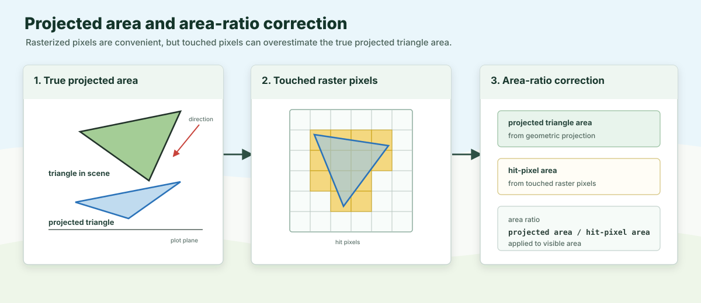

First-Order Interception
First-order interception is the light interception that occurs when rays of light hit objects in the scene. It is computed using a rasterization approach, by projecting the scene onto a 2D plane and counting the visible hits for each component (i.e. the projected area of the object that is visible from the source of light). The intercepted energy is computed from the visible projected area, the optical properties of the component, and the incoming irradiance.
By definition this step does not include any scattering, which is treated in a later step.
This is the Mir stage in the historical ARCHIMED software developed by Jean Dauzat (AMAP, CIRAD).
Core Hypothesis
The canopy is treated as a set of surfaces, implemented as triangle meshes. Each leaf, stem, soil tile, or object contributes through its mesh faces.
Compared to other simpler approaches, this means that:
- visibility is geometric
- occlusion is explicit, which is important for downstream processes such as photosynthesis, energy balance, and scattering
- the solver works at the level of surfaces and projected areas
Why Projection Instead Of Full Ray Tracing
ARCHIMED’s efficiency comes from a very specific compromise. It:
- uses a finite number of incoming directions (e.g. 46 directions) instead of a continuous angular space
- assumes rays are parallel inside each direction, which makes projection easy and fast
- infers visibility from the ordered hits inside projected pixels (and scattering uses the same information)
This is much cheaper than general-purpose ray tracing, while remaining well matched to natural illumination by sun and sky.
Pixel Tables
For each direction, the scene is projected onto the plot domain. The plot is discretized into pixels whose target size is controlled by a parameter (pixel_size).
Each pixel stores:
- the first visible hit
- and, when needed, the lower hits that matter for scattering or sensors
The pixel table is therefore both a visibility structure for first-order interception and a transfer structure reused later by scattering. This makes the model efficient, because it avoids recomputing visibility for each scattering iteration.
When only first-order interception is needed, ARCHIMED only keeps the upper visible hit for each pixel, and discards lower surfaces that will not receive direct light. This remains the compact upper-hit path when the surface has non-zero transparency: the retained hit's intercepted area and power are multiplied by 1 - transparency, while the transmitted share is not assigned to a lower hit. Transparency alone therefore does not switch the solver to a full-stack projection.
When scattering, virtual sensors, or light emitters are active, the solver keeps the full hit stack instead. A non-zero transparency keeps lower hits eligible for interception. Each eligible surface contributes its own 1 - transparency share of the incident pixel flux; the current ARCHIMED compatibility rule does not compound transmission from one transparent layer into the next.
The Area-Ratio Correction
Rasterization introduces a known bias: a triangle rarely covers an integer number of pixels exactly. ARCHIMED compensates with the area-ratio correction.

The idea is:
area ratio = true projected area / hit-pixel areaPixel counts are then rescaled by that factor so the interception estimate stays closer to the true projected geometry.
Toricity During Projection
When toricity=true, projected rays that exit the plot re-enter from the opposite side. The plot behaves like one repeating tile of an infinite canopy.
This is particularly useful for cropping systems with regular spatial patterns, such as annual row crops, orchards, or other repeated planting arrangements. Instead of simulating an entire field, only a single representative tile needs to be modeled while still capturing the light environment created by the surrounding canopy. This approximation works well when neighboring plants are sufficiently similar. However, if plant-to-plant phenotypic variability is large, explicitly representing each plant will generally produce more accurate results.
Toricity is one of the features that makes ARCHIMED well suited for large-scale agricultural simulations because it can approximate an effectively infinite canopy at a fraction of the computational cost, since only the geometry of a single tile needs to be simulated.
What The First-Order Stage Produces
For each node and waveband, the first-order stage accumulates:
- visible projected area
- hit counts
- intercepted power before scattering
After integration, those become the familiar exported variables:
Ri_PAR_0_f: first-order intercepted PAR flux ($W \cdot m_{component}^{-2}$)Ri_NIR_0_f: first-order intercepted NIR flux ($W \cdot m_{component}^{-2}$)Ri_PAR_0_q: first-order intercepted PAR quantity ($J \cdot component^{-1} \cdot timestep^{-1}$)Ri_NIR_0_q: first-order intercepted NIR quantity ($J \cdot component^{-1} \cdot timestep^{-1}$)
Practical Consequences
- smaller
pixel_sizeimproves geometric fidelity but increases runtime area_ratio=trueis usually the right choice, set it to false only for testing or debugging- disabling
scatteringstill gives a complete and meaningful first-order light budget, but complex canopies may be significantly affected by scattering, so it is often better to keep it on - scenes near plot borders are especially sensitive to
toricity, make sure you understand the implications of this option before using it